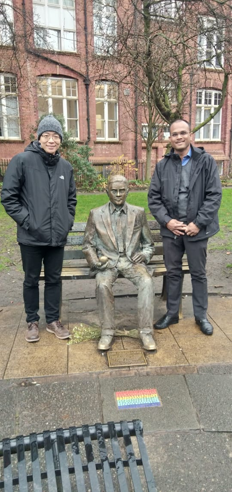
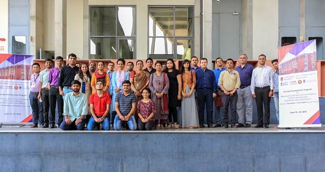
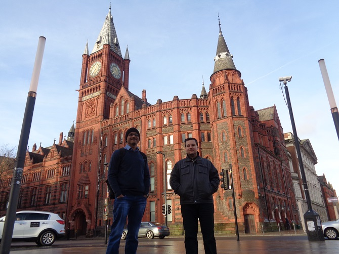
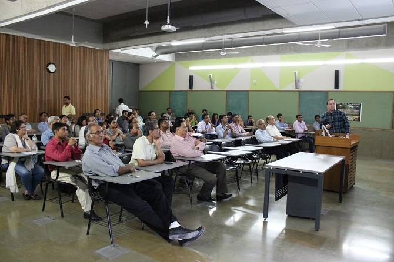
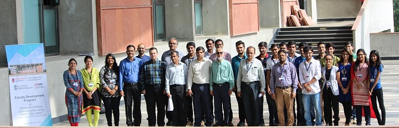

Events and Photos
Events Organized
[2019]
Faculty Development Program on “Machine Learning for xG wireless Networks: Performance Analysis and Monte Carlo Simulations” (As a part of DST-ASEAN and DST-UKIERI Project) Organized by School of Engineering and Applied Science, Ahmedabad University, June 10-15, 2019 [FDP Website: https://ahduni.edu.in/seas/wireless-fdp2019/index.html]
[2018]
Faculty Development Program on “Advanced 5G Wireless Communications: Performance Analysis and Monte-Carlo Simulations” (As a part of DST-ASEAN and DST-UKIERI Project) Organized by School of Engineering and Applied Science, Ahmedabad University, June 18-23, 2018 [FDP Website: https://ahduni.edu.in/seas/wireless-fdp2018/]
[2017]
Faculty Development Program on “Advanced Wireless Communications using USRP / GNURadio” (As a part of DST-UKIERI Project) Organized by School of Engineering and Applied Science, Ahmedabad University, August 16-20, 2017 [FDP Website: https://ahduni.edu.in/seas/wireless-fdp/index.html]
[2016]
UG workshop on “Introduction to OFDM using N210” By Dr. Siddhartan Govindasamy from Olin School, MA, USA.
Photos
With Professor Zhiguo Ding (Left) and Dr. Alan Turing, the Father of Modern Computing at the University of Manchester, UK (December, 2019)
|  |
Luncheon meeting with Dr CHANG Yoong Choon-UTAR, Malaysia and Dr Chien Ching Chiu-Tamkang University,Taiwan (November 2019).
 |
With Dr CHANG yoong Choon at Lee Kong Chian Faculty of Engineering and Science, UTAR, Malaysia (November 2019).
 |
Faculty Development Program at Ahmedabad University, Ahmedabad, India (June 2018).
|  |
Faculty Development Program at Ahmedabad University, Ahmedabad, India (June 2018).
With Miguel Lopez-Benitez during my visit to the University of Liverpool (December 2017).
|  |
Dr. Miguel Lopez-Benitez's visit to Ahmedabad University, Ahmedabad, India (August 2017).
|  |
Faculty Development Program at Ahmedabad University, Ahmedabad, India (August 2017).
|  |